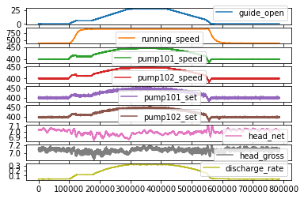
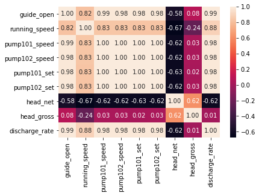
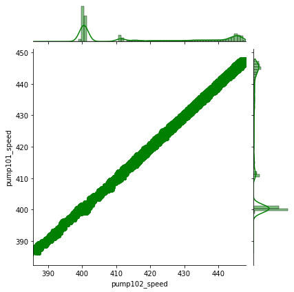

Static modelling¶
- Explore statistical correlation between different parameters
- ML to get static condition
- Deep learning to test $Head$ in terms of pump speed and $head$
import pandas as pd
import numpy as np
import matplotlib.pyplot as plt
from __future__ import print_function
%matplotlib inline
import seaborn as sns
from pandas.plotting import register_matplotlib_converters
# plt.style.use(['science','no-latex'])
# plt.rcParams["font.family"] = "Times New Roman"
%load_ext autoreload
%autoreload 2
1A. Load data from google drive¶
#from google.colab import drive
#drive.mount('/content/drive')
1B. Load data from local drive¶
#import io
#df = pd.read_csv(io.StringIO(uploaded['vattenfall_turbine.csv'].decode('utf-8')))
df = pd.read_csv(r'C:\Users\wengang\OneDrive - Chalmers\2021_Vattenfall\vattenfall_turbine.csv')
keys = df.dtypes.index[1:11]
df_data = df[df.dtypes.index[1:10]]
df_data.plot(subplots=True)
#plt.tight_layout()
plt.show()

#sns.lmplot(df.dtypes.index[1],df.dtypes.index[2], data=df, fit_reg=False)
sns.heatmap(df_data.corr(), annot=True, fmt=".2f")
plt.show()
sns.jointplot(data=df_data, x='pump102_speed', y='pump101_speed', kind='reg', color='g')
plt.show()


2, Use various static ML methods to derive models for Head_g¶
from sklearn.model_selection import train_test_split
from sklearn.linear_model import LinearRegression
from sklearn.metrics import mean_squared_error
from sklearn.tree import DecisionTreeRegressor
from sklearn.ensemble import AdaBoostRegressor
from sklearn.neural_network import MLPRegressor
from sklearn.model_selection import train_test_split, GridSearchCV
from sklearn.metrics import mean_squared_error, r2_score
import xgboost as xgb
2.1, XGBoost model¶
# Prepare for the data
df_data.dropna()
resolution = 100
df_data1 = df_data.iloc[::resolution]
df_features = df_data1[df_data.keys()[[0, 2, 3, 8]]]
df_target = df_data1[['head_gross']]
X_train, X_test, y_train, y_test = train_test_split(df_features, df_target, test_size = 0.2)
y_test = np.sort(y_test)
# Find the optimal parameters for the XGBoost modelling
params_fix = {'objective':'reg:squarederror',
'nthread': -1,
'colsample_bytree': 0.99,
'min_child_weight': 5.0,
'n_estimators': 100
}
params = {'learning_rate': [0.1, 0.15],
'gamma': [5, 6, 7],
#'reg_alpha': 149.79,
'subsample': [0.8, 0.9],
'max_depth': [16, 19]
}
params_best = {'learning_rate': 0.15,
'gamma': 5,
#'reg_alpha': 149.79,
'subsample': 0.9,
'max_depth': 16
}
xgb_reg = xgb.XGBRegressor(**params_fix)
import time
start = time.time()
xgb_models = GridSearchCV(xgb_reg, params).fit(X_train,y_train)
params_best = xgb_models.best_params_
end = time.time()
time_cost = end - start
print(f'The time used to find the optimal solution is {time_cost} seconds')
# Print the best model parameters: NB one should use it in the following analysis
xgb_models.fit(X_train, y_train)
print(xgb_models.best_score_)
print(xgb_models.best_params_)
# Use best parameters to fit the XGBoost model
model_xgb = xgb.XGBRegressor(max_depth = 16, learning_rate = 0.1, gamma= 0, subsample=0.8, colsample_bytree = 0.1, n_estimators = 1000)
model_xgb.fit(X_train, y_train)
# Prediction and model assessment by MSE and R2
predictions_xgb = model_xgb.predict(X_test)
mse_xgb = mean_squared_error(predictions_xgb,y_test)
r2_xgb = r2_score(predictions_xgb,y_test)
# Plot the results
plt.figure()
plt.plot(predictions_xgb, label = "XGBoost with tuned params")
plt.plot(y_test,'-o', label = "Data")
plt.legend()
The time used to find the optimal solution is 79.16086387634277 seconds
-0.0015027951597700983
{'gamma': 5, 'learning_rate': 0.15, 'max_depth': 16, 'subsample': 0.8}
<matplotlib.legend.Legend at 0x190d8043df0>
2.2, Neural Network Model¶
model_nn = MLPRegressor(hidden_layer_sizes=(50,),solver ="lbfgs", random_state=9)
model_nn.fit(X_train,y_train.values.ravel())
predictions_nn = model_nn.predict(X_test)
error_nn = mean_squared_error(predictions_nn, y_test)
# Prediction and model assessment by MSE and R2
mse_nn = mean_squared_error(predictions_nn,y_test)
r2_nn = r2_score(predictions_nn,y_test)
#### Plots of results ####
plt.figure()
plt.plot(y_test,'-o', label = "Data")
plt.plot(predictions_nn,'-*', label = "Neural Network")
plt.legend()
<matplotlib.legend.Legend at 0x190daa44460>
2.3, Ada random forest model¶
#### Ada Boosted Decision Tree ####
# Initialize the model with some parameters.
model_ada = AdaBoostRegressor(DecisionTreeRegressor(max_depth=4), n_estimators=300)
# Fit the model to the data.
model_ada.fit(X_train,y_train.values.ravel())
# Make predictions.
predictions_ada = model_ada.predict(X_test)
# Compute the error.
error_ada = mean_squared_error(predictions_ada, y_test)
# Prediction and model assessment by MSE and R2
mse_ada = mean_squared_error(predictions_ada,y_test)
r2_ada = r2_score(predictions_ada,y_test)
#### Plots of results ####
plt.figure()
plt.plot(y_test,'-o', label = "Data")
plt.plot(predictions_ada,'-*', label = "Ada Boost RF")
plt.legend()
<matplotlib.legend.Legend at 0x190daadb1c0>
2.4, Poly nominal regression model¶
model_lin = LinearRegression()
model_lin.fit(X_train,y_train)
predictions_lin = model_lin.predict(X_test)
error = mean_squared_error(predictions_lin, y_test) # Mean squared error
score = model_lin.score(X_test,y_test) # Variance / score
# Prediction and model assessment by MSE and R2
mse_lin = mean_squared_error(predictions_lin,y_test)
r2_lin = r2_score(predictions_lin,y_test)
#### Plots of results ####
plt.figure()
plt.plot(y_test,'-o', label = "Data")
plt.plot(predictions_lin,'-*', label = "Linear regression")
plt.legend()
<matplotlib.legend.Legend at 0x190db1d28e0>
3, Summary of the results and output of data for matlab plot¶
# Print the goodness of all the models
print(f'R2 of different models.\n The xgboost model: {r2_xgb};\n The neural network model: {r2_nn};\n The ada boost RF model: {r2_ada};\n The linear regression model: {r2_lin}. ')
# NB: OPTIONAL -- save results to Mat file for better plotting
from scipy import io
head_obs = y_test
head_xgb = model_xgb.predict(X_test)
head_nn = model_nn.predict(X_test)
head_ada = model_ada.predict(X_test)
head_lin = model_lin.predict(X_test)
io.savemat('head_data.mat', {'head_obs':head_obs,'head_xgb':head_xgb,'head_nn':head_nn,'head_ada':head_ada,'head_lin':head_lin})
R2 of different models.
The xgboost model: 0.1678369777863331;
The neural network model: -0.842166034311792;
The ada boost RF model: 0.03646914777986854;
The linear regression model: -2.7208236624984203.